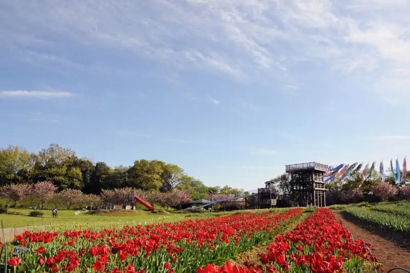
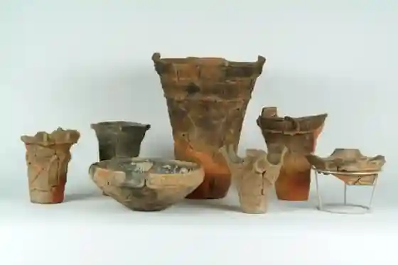
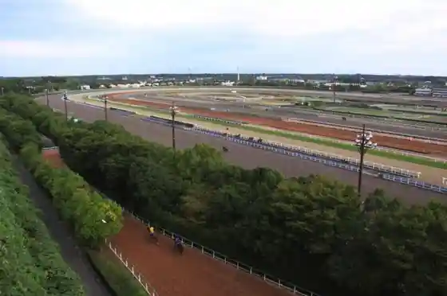
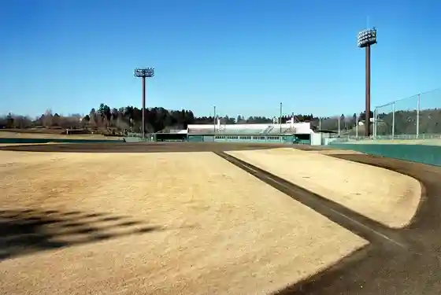
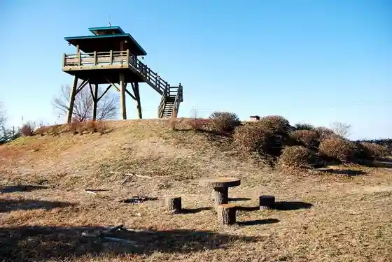

Mihomura, Ibaraki
Mihomura · Ibaraki
Mihomura
Highlighted on the Ibaraki map.

Sights
Riku Tairagai Tsuka Park

JRA Mihomura Toreningu Center

Hikato Kaze no Oka Park

Osuga Tsu Kohan no Village Park

Kihara Joshi Shiroyama Park
Mihomura Bunkazai Center
Atariya Shokudo
Mihofure Ai Plaza Chiiki Sanhin Chokubai Tokoro
Oyama Kohan Park (Kashima Kaigun Kokutai Ato)